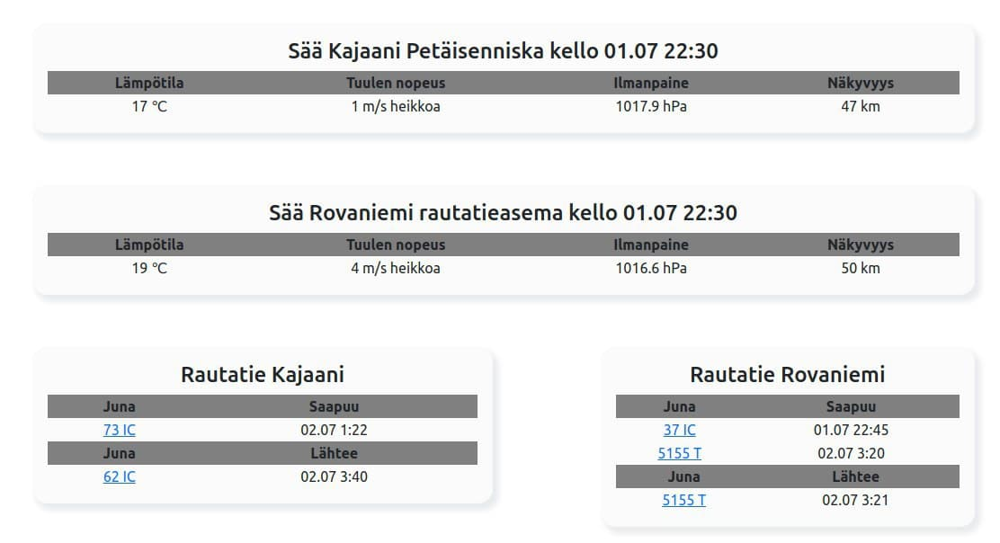

<!-- SääJuna-sovelluksen info-sivu, jossa kerrotaan tietoja sovelluksesta.
Tässä on myös kuvankaappaus sovelluksesta. -->

<div class="container">
  <div class="card">
    <h1>SääJuna Info</h1>
    <hr />
    <h2>Sovellus</h2>
    <p>
      SääJuna-sovelluksessa haetaan tiedot sekä VR:n että Ilmatieteen laitoksen
      avoimesta datasta ja tuodaan ne käyttäjälle näkyviin sovellukseen.
      Sovelluksessa käyttäjä voi hakea esimerkiksi haluamansa rautatieaseman,
      jolloin hän näkee aseman tietoja, sinne tällä hetkellä tulevat ja lähtevät
      junat sekä aseman sääennusteen. Klikkaamalla junaa hän näkee junan
      aikataulun ja missä kohti se on kartalla tällä hetkellä. Karttojen
      kuvakkeita klikkaamalla käyttäjä pääsee myös suoraan rautatieasemien,
      säähavaintoasemien ja kulussa olevien junien tietoihin.
    </p>
    <hr />
    <h2>Käyttäjä</h2>

    <p>
      Käyttäjä voi luoda sovellukseen oman käyttäjätunnuksen, jolla sovellukseen
      voi tallentaa suosikkeja (esim. juna-asemia tai säähavaintoasemia).
      Käyttäjä voi itse poistaa käyttäjätunnuksen ja vaihtaa sen salasanan.
    </p>
    <hr />

    <div>
      
      <p>Kuvankaappaus sovelluksen etusivusta</p>
    </div>
  </div>
</div>
